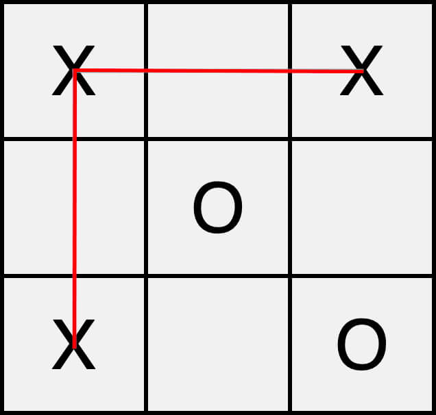

| home | first move | outcomes | data | play |
If the opponent goes anywhere but the center, go to the corner directly adjacent to your current x.
This forces them to go in between, at which point u place an x to fork them.
However, if the opponent goes in the middle, you still have a chance to win. Take the opposite corner
Then, if the opponent goes in anyone of the last 2 corners, you can still fork them.
If the opponent is already familiar with how to play from a corner, you may have to use the center.
If they go on one of the edges, you have a way to force a win. First, place an x next to their o.
This forces them to block you in the corner, at which point you can place the x next to both of yours, forking them.